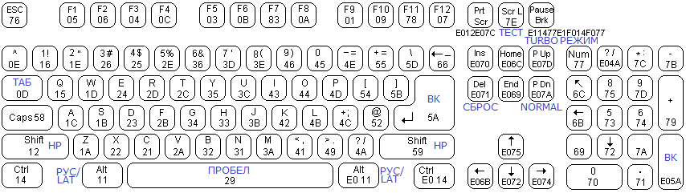
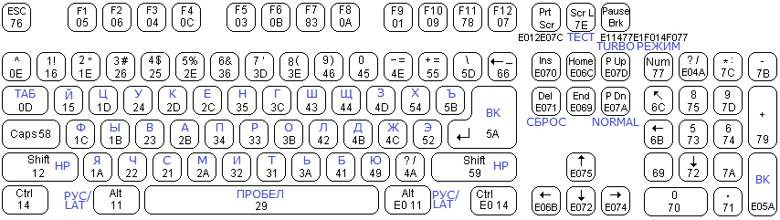

www.spetsialist-mx.ru
САЙТ О ПК "СПЕЦИАЛИСТ" И ЕГО КЛОНАХ
| |
|
| ГЛАВНАЯ | |
| МИКРОПРОЦЕССОР | |
| СИНХРОГЕНЕРАТОР | |
| ПАМЯТЬ | |
| ИНТЕРФЕЙС | |
| КЛОНЫ | |
| ПРОГРАММЫ | |
| ИГРЫ | |
| СПЕЦИАЛИСТ МХ | |
| ПЛИС | |
| ССЫЛКИ | |
| ОБРАТНАЯ СВЯЗЬ |
U10 "REVERSE"
Постановка задачи. ПК "Специалист" Волкова состоит из: синхрогенератора, селектора адресов, процессора КР580ВМ80А, ППА клавиатуры / звука / магнитофона (КР580ВВ55), 48 кБайт ОЗУ, 12 кБайт ПЗУ и ППА программатора (КР580ВВ55). Дополнительно собирался контроллер 8 - ми цветов на ОЗУ 12 кБайт Х 3 бита. В ПК "Специалист МХ" ОЗУ было увеличено до 48 + 512 кБайт, ПЗУ - до 48 кБайт. Был также добавлен таймер К580ВИ53 и контроллер дисковода на К1816ВГ93. Контроллер цвета стал уже 16 - ти цветным с ОЗУ на 12 кБайт Х 8 бит. Была возможность поменять процессор на Z80.
Реализация. В качестве отладочной платы использована DevBoard "Reverse". ПЛИС Altera семейства Cyclone III (EP3C10E144) имеет в своём арсенале 423936 бит => 423936/8=52992 байт => 52992/1024=51 кБайт 768 байт. Эту память можно использовать под ПЗУ (ROM - диск). Решено было разместить всё ОЗУ и RAM - диск в SRAM ОЗУ CY7C1049DV33 Х 2 (1 МБайт). Всё остальное (синхрогенератор, селектор адресов, процессор 8080 (КР580ВМ80), ППА клавиатуры / звука (КР580ВВ55), таймер К580ВИ53, контроллер цвета) реализовано программно и "зашито" в ПЛИС. От записи / считывания на / с магнитофона и контроллера дисковода было решено отказаться как от изживших себя. Вместо этого был введён считыватель SD карт (SPI интерфейс). ПК будет работать в двух устойчивых режимах - "Стандарт" и "МХ", повторяющих конфигурацию ПК Волкова и Афанасьева соответственно. Одной из основных особенностей ПК вместо стандартной для ПК "Специалист" стало использование PS/2 клавиатуры от ПК IBM PC.
В прошивке сэмулирован процессор 8080 (т. к. при применении Z80 кое - какое ПО не работает). Исходники взяты с сайта и исправлены участником форума www.zx.pk.ru. В качестве заглавного использован файл с раздельной шиной данных (DIn и DOn). В качестве входной частоты процессора используется частота 4 МГц (режим Turbo), таймера - 2 МГц. Исходники эмулляции таймера 8253 (К580ВИ53) заимствованы с ПК "Вектор-06Ц". Исходные коды драйвера PS/2 клавиатуры позаимствованы с ПК "Орион 2010".
КЛАВИАТУРА
Используемая клавиатура PS/2 повторяет клавиши ПК "Специалист". Не все надписи на клавиатуре совпадают с используемые в ПК. Поэтому следует запомнить назначение и местоположение не совпадающих клавиш. Ниже на рисунке представлена расскладка, применяемая в режиме "LAT", который является основным и устанавливается при включении и сбросе ПК.

А теперь о расскладке клавиатуры в режиме "РУС", который включается нажатием на клавишу "РУС" / "LAT". Ниже представлен рисунок данной расскладки.

Благодарности за огромную помощь в сборке данной версии Специалиста:
1. автору ПК "Специалист MX2" Игорю Внукову;
2. автору ПК "Орион-2010" Евгению Иванову;
3. автору ПК "Специалист МХ" Леониду Афанасьеву.
| Назначение | Файл |
|---|---|
Схема DevBoard "Reverse" u10ep3c_12 |
|
Исходники в формате Quartus 9.1 Full |
|
Файл прошивки конфиг ПЗУ |
|
Схема программатора "Byte Blaster" |
|
Схема программатора "USB Blaster" |
|
Программа программатора |
{kind=link}
{kind=link}
Портирование проекта на другую плату. Проект в разработке.